Foto Walk 2026 — Alicante
ALICANTE CITY CENTRE HOSTS SUCCESSFUL FOTO WALK 2026
On the first Saturday morning of this autumn, before the sun climbed too high and the shadows got too sharp, my photography club colleague Lev and I met our group in the Mercado area of Alicante for the second edition of the Foto Walk. Last year's debut brought together more than a thousand photographers in cities from Nashville to Glasgow to Paris, and this time round the event spanned over 100 walks worldwide — Alicante included.
Dressed in matching red — Foto's brand colour to help people spot us —, we led our group of more than a dozen registered photographers away from the flower stalls at Mercado Central and down Calle Tomás López Torregrosa. There, the tall building lines and Mediterranean sunlight reflected off the pavement got cameras working straight away. We regrouped briefly at Plaza de San Cristóbal before slipping into the narrow cobbled streets of Alicante's old quarter.
Our longest stop was at Plaza del Abad Penalva, next to the Concatedral de San Nicolás — excellent light for stone textures, archways and courtyard shadows, and a natural spot to grab a drink and compare shots. This pedestrian thoroughfare usually proves to be a fantastic spot for budding and veteran street photography enthusiasts alike! From there, we traversed the labyrinth into Plaza de la Santísima Faz, where the palm trees threw long, broken shadows across the square.
Next came the spectacular entrance through the stone archway into the Plaza del Ayuntamiento for a few natural-frame shots. Later, we wrapped up under the palms on the Explanada de España, where people could photograph the iconic wave-pattern tiled mosaic walkway in total comfort without having to dodge traffic to do it.
After a group photo, participants made the most of a few more photographic opportunities along the marina waterside or Explanada, and some of us stopped to grab a drink and chat on a nearby terrace. All told: brilliant light, good company, and the kind of conversation that only happens with people who stop mid-sentence because they've spotted the same shadow you have.
If you were there, as we mentioned, we would really appreciate the following:
- Foto App: Download the Foto app (fotoapp.co), or here on Google Play, upload your walk photos, and use the internal tag
Foto Walk(orPhoto Walk) so participants globally can see our Alicante captures. - Instagram: If you post on Instagram, tag @thefotoapp and use the hashtag #FotoWalk so the global Foto team can reshare our stories.
Also, if you participated, you can share your best selection of photos from the walk by replying to this post, and in a few days I will publish a gallery with a selection right here on this website. You can send them to me via any of these options:
- Using the form on my contact page.
- Sending a message from that same contact page pasting a link (URL) where your photos can be downloaded (for example via Google Photos, WeTransfer, Dropbox, or any service you usually use).
- Or, if you have a Google account, adding your pictures directly to our shared Google Photos album.
A big thank you to all the wonderful participants and, above all, to Michael (CEO of Foto) and the small team behind that now-familiar red logo of this maturing startup, both for the great idea and for trusting us to host the 2026 event here on the sunny Costa Blanca.
A few example photos of the area:
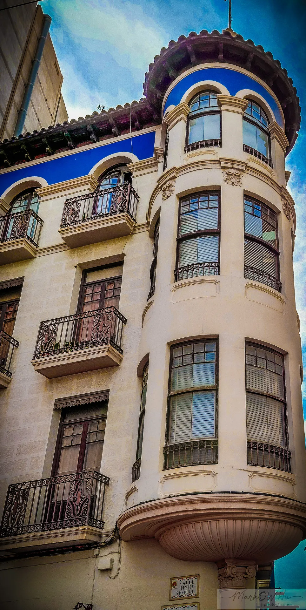
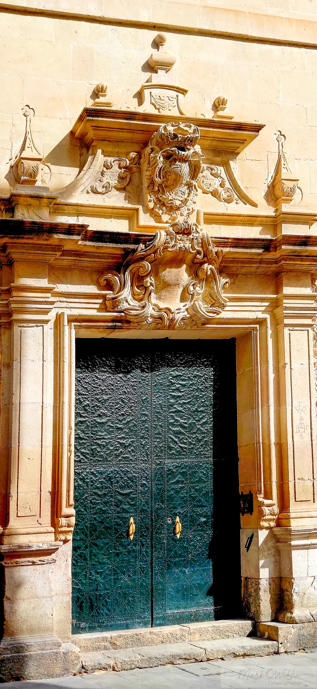
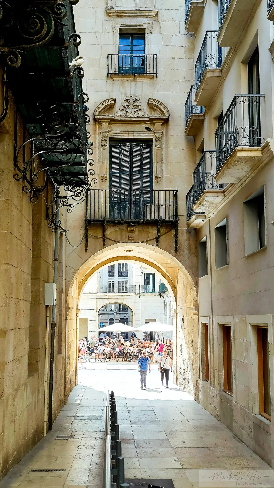
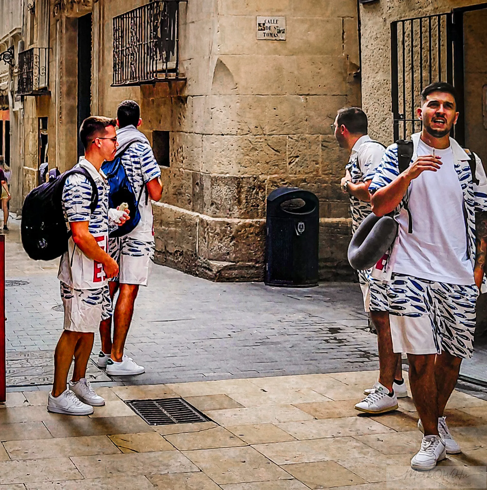
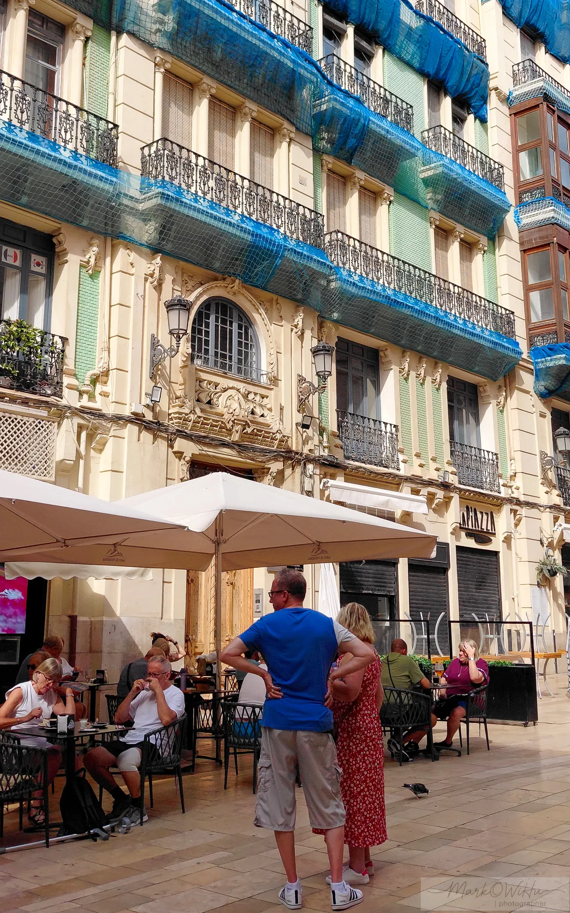
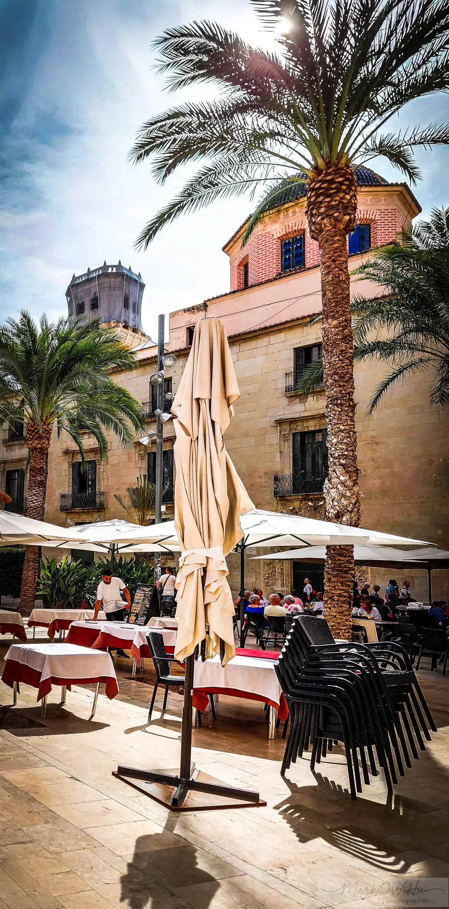
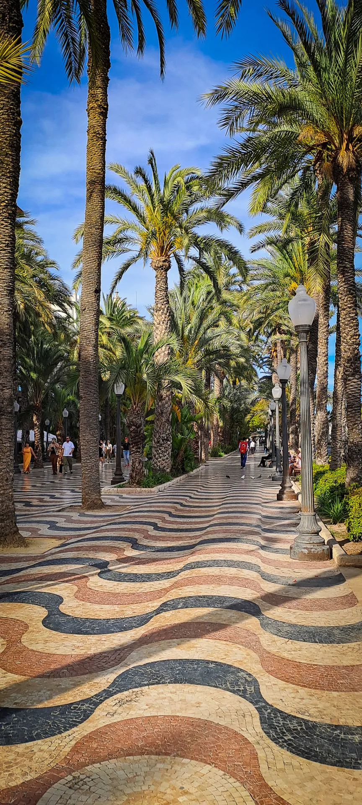
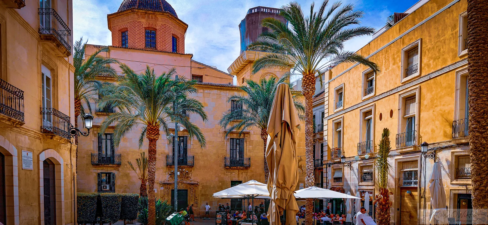
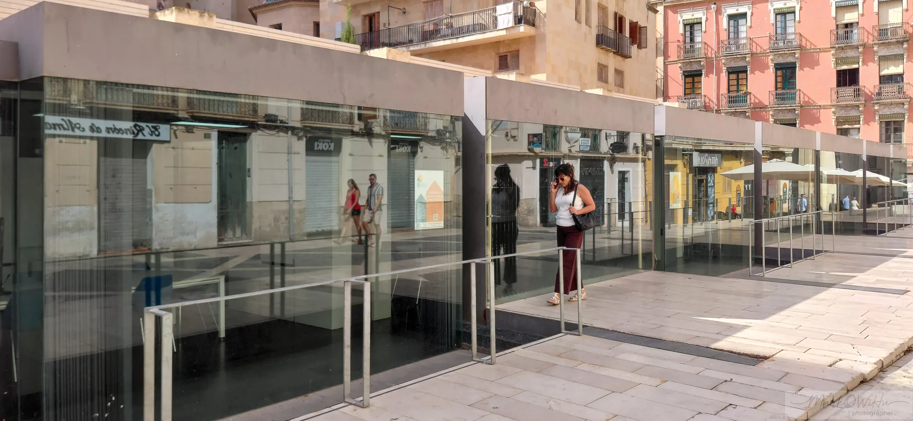
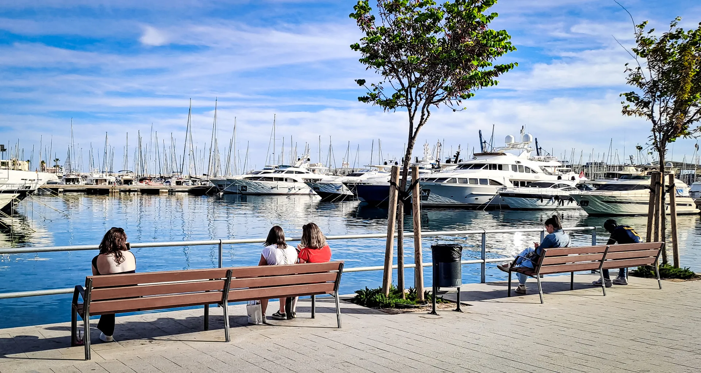
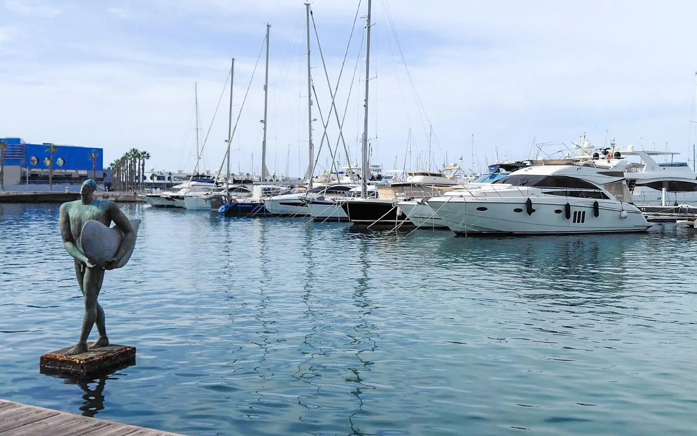
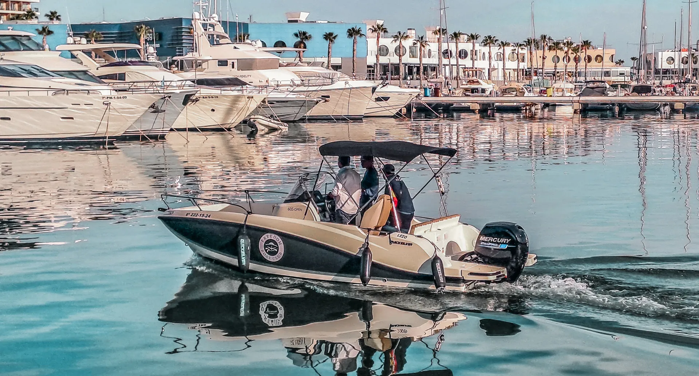